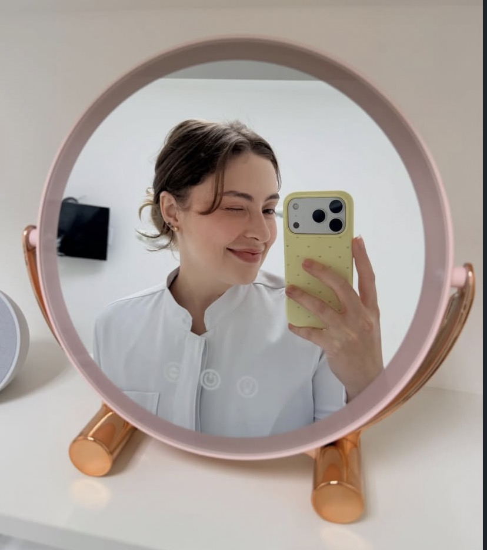
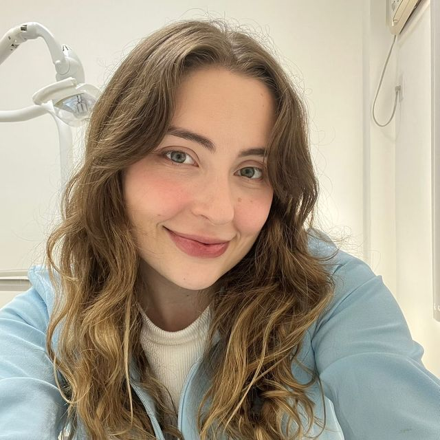
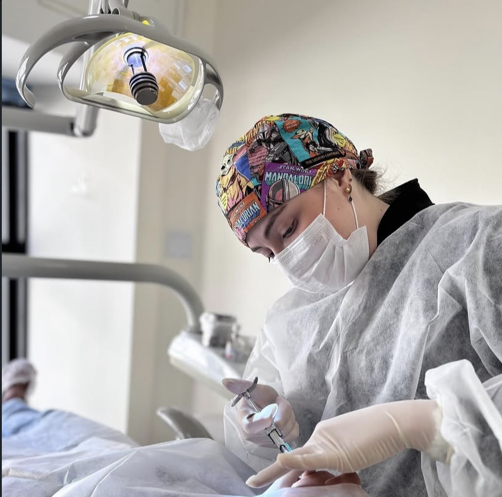

Periodontia
Tratamento de gengivite e periodontite, raspagem, controle de sangramento e manutenção depois do tratamento.
Periodontia e implantodontia · Tijuca, Rio de Janeiro
Periodontia, implantes e prótese na Tijuca, com diagnóstico completo antes de qualquer proposta de tratamento. Mestre pela UFF e instrutora de cirurgia plástica periodontal no INERO.


Quem atende
Angelica Vaitsman é cirurgiã-dentista, mestre pela Universidade Federal Fluminense e instrutora de cirurgia plástica periodontal no INERO, onde forma outros dentistas nas técnicas de recobrimento de raiz, enxerto de tecido mole e manejo do tecido ao redor de implantes.
Na cadeira, isso aparece de um jeito simples: o caso é avaliado antes de qualquer proposta, e cada etapa é explicada enquanto acontece.
Formação e atuação
INERO — Institute of Dental Rehabilitation Education, Rio de Janeiro. Ensina planejamento cirúrgico, cirurgia ao vivo e discussão de casos.
Universidade Federal Fluminense (UFF). Pesquisa sobre protocolos de higienização e suas consequências em resinas para base de prótese.
Faculdade São Leopoldo Mandic. Ensaio clínico sobre reabilitação com implantes na região posterior: carga imediata comparada à tardia.
Universidade Federal do Rio de Janeiro (UFRJ).
CRO-RJ 48701 · Periodontia · Implantodontia · Prótese · @dra.angelicavaitsman
Especialidades
A gengiva sustenta o dente, o implante repõe o que se perdeu e a prótese devolve a função. As quatro frentes se conversam.
Tratamento de gengivite e periodontite, raspagem, controle de sangramento e manutenção depois do tratamento.
Reposição de dentes perdidos com planejamento cirúrgico e prótese sobre implante.
Coroas, próteses fixas e removíveis, planejadas caso a caso para devolver mastigação e estética.
Cirurgia plástica periodontal e periimplantar, incluindo correção de contorno da gengiva e enxerto.
Cirurgia
Nem todo caso de gengiva se resolve com raspagem. Quando a gengiva retrai e expõe a raiz, quando falta tecido para sustentar um implante ou quando o contorno gengival precisa ser corrigido, o caminho é cirúrgico.
É uma cirurgia de precisão, feita em tecido milimétrico. É também a área que a Dra. Angelica ensina a outros dentistas no INERO desde 2022.
Procedimentos

Procedimento no consultório · Tijuca
Avaliações
A nota é do perfil no Google, escrita por quem já foi atendido. Dá para ler todas, sem filtro, direto na página do consultório.
5,0 de média em 107 avaliações. Nota alta com poucas avaliações diz pouco; manter 5,0 depois de uma centena diz bastante.
As avaliações ficam no Google, não aqui. Nada foi selecionado, editado ou reescrito para esta página.
Quem escreveu tem perfil no Google. Dá para conferir cada avaliação, com data e autor, na ficha do consultório.
Onde fica
Horário
O prédio fica na Conde de Bonfim. Suba até o quinto andar — o atendimento é com hora marcada, então confirme o horário pelo WhatsApp antes de vir.
Perguntas
Dúvidas de logística. Qualquer coisa sobre o seu caso é respondida na avaliação, olhando a sua boca — não por texto na internet.
Pelo WhatsApp, no (21) 99225-4443. O atendimento é de segunda a sexta, das 8h às 19h, sempre com hora marcada.
É uma avaliação. A Dra. Angelica examina o caso, explica o que está acontecendo e apresenta o plano de tratamento. Nenhum procedimento começa antes dessa conversa.
O endereço é Rua Conde de Bonfim, 422, na Tijuca. O consultório fica na sala 501, no quinto andar. Como o atendimento é com hora marcada, confirme o horário pelo WhatsApp antes de vir.